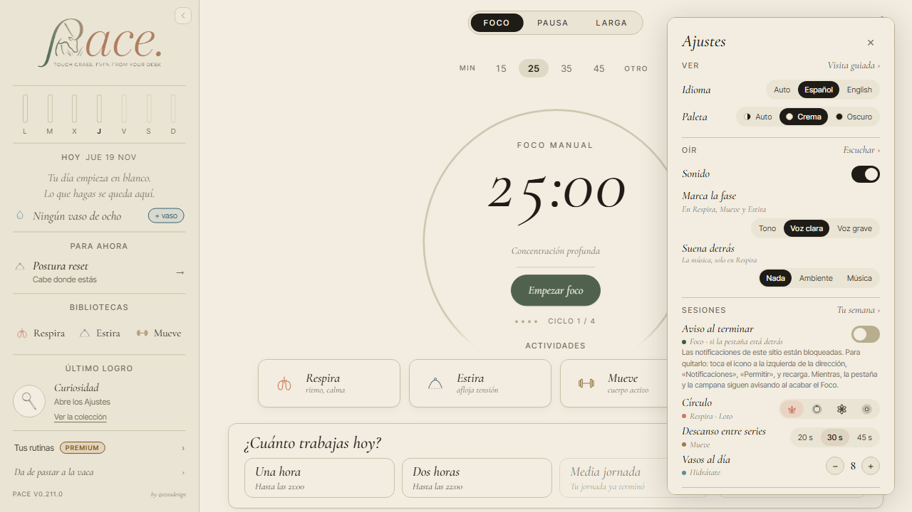
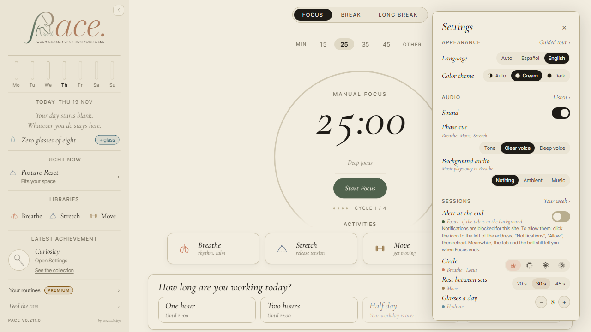
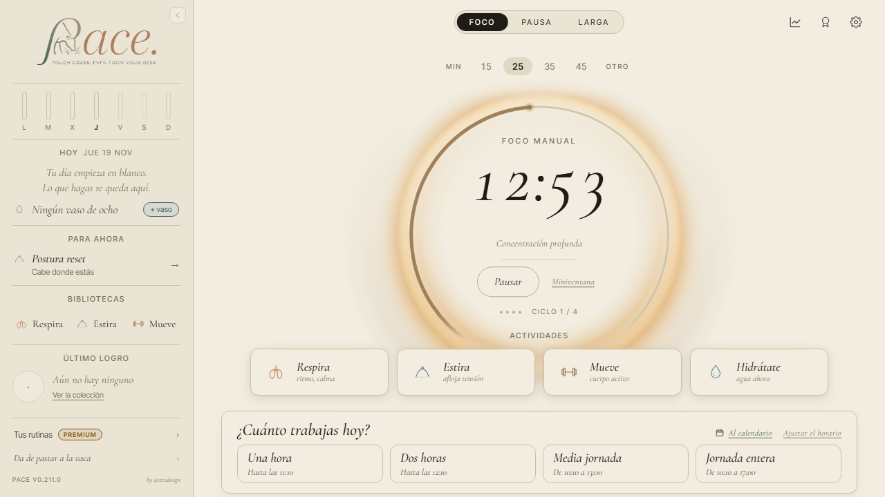
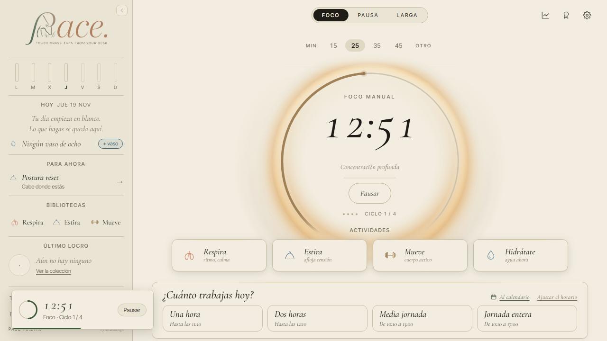
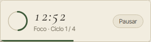
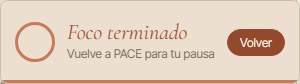
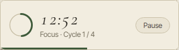
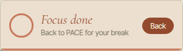
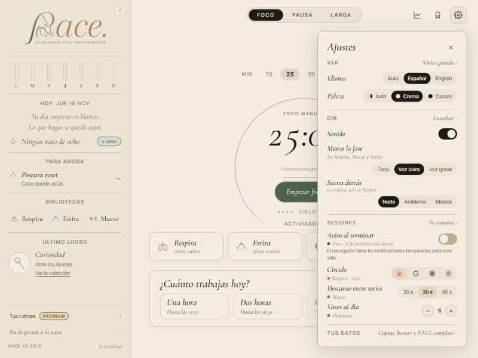
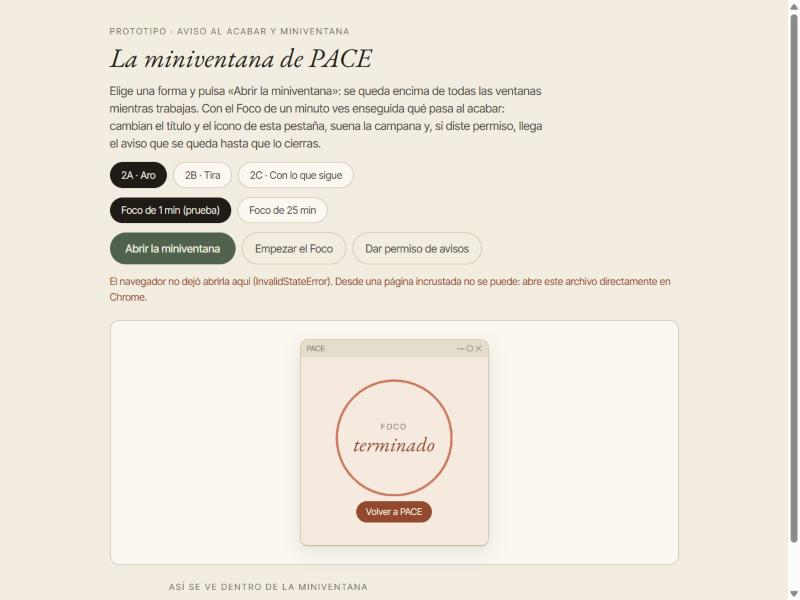

<title>Aviso del Foco en el PC</title>
<meta name="claude:viewport-fit-sides" content="cover">
<link rel="preconnect" href="https://fonts.googleapis.com">
<link rel="preconnect" href="https://fonts.gstatic.com" crossorigin>
<link rel="stylesheet" href="https://fonts.googleapis.com/css2?family=EB+Garamond:ital,wght@0,400;0,500;1,400&family=Inter+Tight:wght@400;500;600&display=swap">
<style>
/* Una columna de papel y tinta, como las demás páginas de propuestas: lo que pasa hoy, las opciones
   pintadas como se verían en el PC (pestaña, aviso de Windows, miniventana) y las preguntas con su
   recomendada. Terracota = lo que espera a Ez y el «terminado»; oliva = lo recomendado y el Foco. */
:root{
  --paper:#F2EDE0;--card:#FBF8F1;--desk:#E4DDCB;
  --ink:#1F1C17;--ink-2:#4A453C;--ink-3:#77705F;
  --line:#C9C0A8;
  --olive:#3E5A3A;--olive-soft:rgba(62,90,58,.12);--cta:#50624D;
  --terra:#C97A5D;--terra-deep:#93492D;--terra-soft:rgba(201,122,93,.14);--fin:#F6E9DF;
  --win:#2B2B2B;--win-ink:#F3F3F3;--win-ink-2:#B8B8B8;
  --display:'EB Garamond',Georgia,'Times New Roman',serif;
  --ui:'Inter Tight',system-ui,-apple-system,'Segoe UI',sans-serif;
  --mono:ui-monospace,'Cascadia Mono',Consolas,monospace;
}
@media (prefers-color-scheme: dark){:root:not([data-theme="light"]){
  --paper:#1d1a14;--card:#2c271f;--desk:#26211a;--ink:#EDE5D3;--ink-2:#c0b49e;--ink-3:#B2A995;--line:#4d4536;
  --olive:#98B58B;--olive-soft:rgba(122,154,109,.16);--terra:#D99477;--terra-deep:#E8A98F;--terra-soft:rgba(232,169,143,.14);--fin:#3a2a22;color-scheme:dark;
}}
:root[data-theme="dark"]{
  --paper:#1d1a14;--card:#2c271f;--desk:#26211a;--ink:#EDE5D3;--ink-2:#c0b49e;--ink-3:#B2A995;--line:#4d4536;
  --olive:#98B58B;--olive-soft:rgba(122,154,109,.16);--terra:#D99477;--terra-deep:#E8A98F;--terra-soft:rgba(232,169,143,.14);--fin:#3a2a22;color-scheme:dark;
}
*{box-sizing:border-box}
body{margin:0;background:var(--paper);color:var(--ink);font-family:var(--ui);font-size:16px;line-height:1.55;-webkit-text-size-adjust:100%}
main{max-width:880px;margin:0 auto;padding-left:max(16px,env(safe-area-inset-left,0px));padding-right:max(16px,env(safe-area-inset-right,0px));padding-block:40px 72px}
h1,h2,h3{font-family:var(--display);font-style:italic;font-weight:400;line-height:1.15;margin:0;text-wrap:balance}
h1{font-size:clamp(32px,6vw,44px)}
h2{font-size:clamp(23px,4vw,28px);margin:44px 0 10px;padding-top:22px;border-top:1px solid var(--line)}
h3{font-size:21px;margin:0 0 6px}
p{margin:0 0 12px;color:var(--ink-2);max-width:68ch}
ul{margin:0 0 14px;padding-left:20px;color:var(--ink-2);max-width:68ch}
li{margin-bottom:6px}
strong{color:var(--ink);font-weight:500}
code{font-family:var(--mono);font-size:.86em;background:var(--card);border:1px solid var(--line);border-radius:4px;padding:0 4px;word-break:break-word}
a{color:var(--olive)}
a:focus-visible,button:focus-visible{outline:2px solid var(--olive);outline-offset:2px}
.eyebrow{font-size:12px;letter-spacing:.14em;text-transform:uppercase;color:var(--ink-3);margin-bottom:10px}
.lead{font-family:var(--display);font-size:21px;color:var(--ink);max-width:62ch;margin-top:14px}
.nota{font-size:13px;color:var(--ink-3)}
.resumen{background:var(--card);border:1px solid var(--line);border-radius:10px;padding:14px 16px;margin:20px 0}
.resumen p{margin:0;color:var(--ink)}
.resumen b{font-weight:600;color:var(--olive)}

/* Preguntas */
.pregunta{border-left:3px solid var(--terra);padding:2px 0 2px 16px;margin:26px 0 8px}
.ops{display:grid;gap:10px;margin:12px 0}
.op{background:var(--card);border:1px solid var(--line);border-radius:10px;padding:12px 14px;display:grid;grid-template-columns:auto 1fr;gap:4px 12px;align-items:start}
.op .letra{font-family:var(--display);font-size:22px;line-height:1;color:var(--ink-3);padding-top:2px;min-width:2.2em}
.op .txt{min-width:0}
.op .txt p{margin:0 0 4px;font-size:15px}
.op .txt p:last-child{margin-bottom:0}
.op.es-rec{border-color:var(--olive);background:linear-gradient(var(--olive-soft),var(--olive-soft)),var(--card)}
.op.es-rec .letra{color:var(--olive)}
.chip{display:inline-block;font-size:11px;letter-spacing:.1em;text-transform:uppercase;color:var(--olive);border:1px solid var(--olive);border-radius:999px;padding:1px 8px;margin-left:6px;vertical-align:2px}
.cuesta{font-size:13px;color:var(--ink-3)}

/* Fotos */
.fotos{display:grid;gap:14px;grid-template-columns:repeat(auto-fill,minmax(260px,1fr));margin:14px 0}
.fotos figure{margin:0;min-width:0}
.fotos img{display:block;width:100%;height:auto;border:1px solid var(--line);border-radius:8px}
figcaption{font-size:13px;color:var(--ink-3);margin-top:6px}
figcaption b{color:var(--ink-2);font-weight:500}

/* Escenas pintadas: la mesa del PC */
.escenas{display:grid;gap:14px;grid-template-columns:repeat(auto-fill,minmax(300px,1fr));margin:14px 0}
.escena{margin:0;min-width:0}
.mesa{background:var(--desk);border:1px solid var(--line);border-radius:10px;padding:14px;min-height:140px;display:flex;flex-direction:column;justify-content:center;gap:10px;overflow:hidden}
/* La tira de pestañas de Chrome */
.pestanas{display:flex;gap:2px;background:#DAD3C0;border-radius:8px 8px 0 0;padding:6px 6px 0;overflow:hidden}
.pest{display:flex;align-items:center;gap:6px;background:#CFC7B2;border-radius:7px 7px 0 0;padding:6px 10px;font-size:12px;color:#3a352c;min-width:0;flex:0 1 190px;white-space:nowrap;overflow:hidden;text-overflow:ellipsis}
.pest.activa{background:#F7F3EA}
.pest.pace{flex:1 0 auto}
.pest.otra{flex:0 1 92px}
.pest .ic{flex:none;width:14px;height:14px;border-radius:50%}
img.ic{border-radius:0}
.pest .t{overflow:hidden;text-overflow:ellipsis}
.pest.fija{flex:0 0 auto;padding:6px 9px}
.ic-pace{background:radial-gradient(circle,#F2EDE0 38%,transparent 40%),conic-gradient(#3E5A3A 0 70%,#C9C0A8 70% 100%)}
.ic-fin{background:radial-gradient(circle,#C97A5D 42%,#F2EDE0 44%,#F2EDE0 58%,#C9C0A8 60%)}
.ic-pace0{background:#3E5A3A}
.ic-otra{background:#7d8aa0}
.ic-otra2{background:#c0a060}
.pagina{background:#F7F3EA;height:44px;border-radius:0 0 6px 6px}
/* El aviso de Windows */
.toast{align-self:flex-end;width:min(100%,300px);background:var(--win);color:var(--win-ink);border-radius:8px;padding:10px 12px;font-family:'Segoe UI',var(--ui);box-shadow:0 6px 18px rgba(0,0,0,.25)}
.toast .de{display:flex;align-items:center;gap:6px;font-size:11px;color:var(--win-ink-2)}
.toast .de i{width:12px;height:12px;border-radius:3px;background:#4f8bd6;display:inline-block}
.toast .cuerpo{display:flex;gap:10px;margin-top:8px}
.toast .logo{flex:none;width:36px;height:36px;border-radius:50%;background:#F2EDE0;display:flex;align-items:center;justify-content:center;font-family:var(--display);font-style:italic;color:#3E5A3A;font-size:20px}
.toast b{display:block;font-size:13px;font-weight:600}
.toast span{font-size:12px;color:#d6d6d6}
.toast .cerrar{margin-top:10px;text-align:center;background:#3a3a3a;border-radius:4px;font-size:12px;padding:5px}
.toast.ido{opacity:.35}

/* Las miniventanas */
.minis{display:grid;gap:18px 14px;grid-template-columns:repeat(auto-fill,minmax(310px,1fr));margin:16px 0}
.minifig{margin:0;min-width:0;display:flex;flex-direction:column;align-items:center;gap:8px}
.ventana{border-radius:10px;overflow:hidden;border:1px solid var(--line);box-shadow:0 1px 0 var(--line),0 8px 20px rgba(31,28,23,.12);background:#F2EDE0;max-width:100%}
.ventana .barra{height:20px;background:#E4DDCB;display:flex;align-items:center;justify-content:space-between;padding:0 8px;font-size:10px;color:#77705F;font-family:var(--ui)}
.mini{font-family:var(--ui);color:#1F1C17;background:#F2EDE0;display:flex;align-items:center;justify-content:center}
.mini .ojo{font-size:10px;letter-spacing:.18em;text-transform:uppercase;color:#77705F}
.mini .hora{font-family:var(--display);font-style:italic;font-weight:400;font-variant-numeric:tabular-nums;line-height:1}
.mini .boton{border:1px solid #C9C0A8;background:#FBF8F1;color:#4A453C;border-radius:999px;padding:3px 11px;font-size:12px}
.mini .boton.lleno{background:#93492D;border-color:#93492D;color:#F7EFE3}
.mini.fin{background:#F6E9DF}
.miniA{width:220px;height:220px;flex-direction:column;gap:6px}
.miniA .aro{position:relative;width:140px;height:140px}
.miniA .aro svg{position:absolute;inset:0}
.miniA .dentro{position:absolute;inset:0;display:flex;flex-direction:column;align-items:center;justify-content:center;gap:2px}
.miniA .hora{font-size:38px}
.miniA.fin .hora{font-size:25px;color:#93492D}
.miniB{width:300px;height:84px;gap:12px;padding:0 14px;justify-content:flex-start;position:relative}
.miniB .hora{font-size:30px}
.miniB .txt{display:flex;flex-direction:column;gap:2px;flex:1;min-width:0}
.miniB .sub{font-size:12px;color:#77705F;white-space:nowrap;overflow:hidden;text-overflow:ellipsis}
.miniB .linea{position:absolute;left:0;bottom:0;height:3px;background:#3E5A3A}
.miniB.fin .linea{background:#C97A5D}
.miniB.fin .hora{font-size:22px;color:#93492D}
.miniC{width:270px;height:180px;flex-direction:column;align-items:stretch;gap:8px;padding:0 18px}
.miniC .arriba{display:flex;align-items:baseline;justify-content:space-between}
.miniC .hora{font-size:42px}
.miniC .pista{height:3px;background:#C9C0A8;border-radius:2px;overflow:hidden}
.miniC .pista i{display:block;height:100%;background:#3E5A3A}
.miniC .sigue{font-size:13px;color:#4A453C}
.miniC .sigue b{font-family:var(--display);font-style:italic;font-weight:400;font-size:17px;color:#1F1C17}
.miniC.fin .hora{font-size:27px;color:#93492D}
.miniC.fin .pista i{background:#C97A5D}
.minifig figcaption{text-align:center}

/* Tablas */
.tabla{overflow-x:auto;margin:12px 0 16px;border:1px solid var(--line);border-radius:10px;background:var(--card)}
table{border-collapse:collapse;width:100%;font-size:14px;min-width:560px}
th,td{padding:8px 12px;text-align:left;vertical-align:top;border-bottom:1px solid var(--line)}
tr:last-child td{border-bottom:0}
th{font-weight:500;color:var(--ink);font-size:12px;letter-spacing:.06em;text-transform:uppercase}
td{color:var(--ink-2)}
td.si{color:var(--olive)}
td.no{color:var(--terra-deep)}

.prueba{display:flex;flex-wrap:wrap;gap:10px;align-items:center;margin:12px 0}
.prueba button{font:inherit;font-size:14px;font-weight:500;cursor:pointer;background:var(--cta);color:#F2EDE0;border:0;border-radius:999px;padding:9px 18px}
#prueba-estado{font-size:13px;color:var(--ink-3)}
.elige{font-family:var(--display);font-size:22px;color:var(--ink)}
.elige b{font-weight:500;color:var(--olive)}
</style>

<main>
  <div class="eyebrow">Propuesta y montaje · 19 nov. 2026 · sobre la 0.211.0</div>
  <h1>Que el Foco te avise en el PC</h1>
  <p class="lead">Dos encargos tuyos: enterarte de que acabó el Foco sin volver a la pestaña de PACE, y una miniventana con el aro encima de todas las ventanas.</p>

  <div class="resumen">
    <p>Elegiste <b>1A + 1C</b>, <b>tres toques de campana</b>, <b>1.2A</b>, <b>2B</b> y <b>2.2A</b>. Está todo montado en la rama del aviso, cada letra con su prueba, sin juntar todavía con lo demás. Abajo van las fotos de la app de verdad, en español y en inglés, y después la propuesta tal como la viste.</p>
  </div>

  <h2 id="montado">Lo montado</h2>

  <h3>La pestaña (1C)</h3>
  <p>Mientras corre, el icono es un aro que se va llenando. Si el Foco acaba sin que mires la pestaña, dice «● Foco terminado · PACE» con el icono en terracota hasta que vuelves. Si la estabas mirando, no lo dice.</p>
  <div class="escenas">
    <figure class="escena">
      <div class="mesa">
        <div><div class="pestanas"><div class="pest otra"><span class="ic ic-otra"></span><span class="t">Correo</span></div><div class="pest pace"><span class="t">12:59 · Foco · PACE</span></div><div class="pest activa otra"><span class="ic ic-otra2"></span><span class="t">Informe</span></div></div><div class="pagina"></div></div>
      </div>
      <figcaption><b>Corriendo.</b> Icono y título los pone la app; son los de verdad.</figcaption>
    </figure>
    <figure class="escena">
      <div class="mesa">
        <div><div class="pestanas"><div class="pest otra"><span class="ic ic-otra"></span><span class="t">Correo</span></div><div class="pest pace"><span class="t">● Foco terminado · PACE</span></div><div class="pest activa otra"><span class="ic ic-otra2"></span><span class="t">Informe</span></div></div><div class="pagina"></div></div>
        <div class="toast"><div class="de"><i></i>Google Chrome · pacegrass.app</div><div class="cuerpo"><div class="logo">p</div><div><b>Foco completado</b><span>Ciclo cerrado. Elige tu micro-pausa.</span></div></div><div class="cerrar">Cerrar</div></div>
      </div>
      <figcaption><b>Al acabar, sin mirarla (1A y 1C).</b> El aviso lleva el texto de siempre (con «A tu ritmo», el nombre de la pausa) y ahora se queda hasta cerrarlo. La barra de pestañas y el aviso están pintados: una foto de la página no los incluye. Lo que hace Windows de verdad, en tu PC.</figcaption>
    </figure>
  </div>
  <p class="nota">También en las dos: el final se programa a su hora exacta, así que la campana y el aviso ya no llegan un minuto tarde con la pestaña detrás.</p>

  <h3>Tres toques de campana</h3>
  <p>Lo entendí como tres golpes seguidos al acabar el Foco: din, din, din, en vez de uno. Si querías otra cosa, por ejemplo que vuelva a sonar al minuto si no has vuelto (la 1D), es cambiar un número o una línea: dímelo. El aviso grabado del móvil sigue siendo de un toque.</p>

  <h3>Con el permiso bloqueado (1.2A)</h3>
  <p>La nota de Ajustes dice cómo quitarlo en tu navegador (Chrome, Edge, Firefox o Safari) y que la pestaña y la campana siguen avisando.</p>
  <div class="fotos">
    <figure><figcaption><b>Chrome, en español.</b></figcaption></figure>
    <figure><figcaption><b>En inglés.</b></figcaption></figure>
  </div>

  <h3>La tira encima de todo (2B) y su botón (2.2A)</h3>
  <p>Mientras corre un Foco sale «Miniventana» junto a «Pausar», solo en los navegadores que la tienen. Al tocarlo se abre la tira, que se queda encima de cualquier programa. «Pausar» y «Continuar» de la tira mandan sobre el Foco. Al acabar se pone en terracota.</p>
  <div class="fotos">
    <figure><figcaption><b>El botón, junto a «Pausar».</b></figcaption></figure>
    <figure><figcaption><b>La tira abierta.</b> En la foto va dentro de la página, abajo a la izquierda; en Chrome es una ventana aparte, encima de todo.</figcaption></figure>
  </div>
  <div class="fotos">
    <figure><figcaption><b>Corriendo.</b></figcaption></figure>
    <figure><figcaption><b>Al acabar.</b></figcaption></figure>
    <figure><figcaption><b>En inglés, corriendo.</b></figcaption></figure>
    <figure><figcaption><b>En inglés, al acabar.</b></figcaption></figure>
  </div>

  <h3>Se abre sola (20 nov.)</h3>
  <p>Elegiste «A: recuerda el cierre», y está montado en la rama <code>claude/mini-sola-20nov</code>. Al pulsar «Empezar foco» en el ordenador, la tira se abre sola. Si arranca sin que pulses nada (al recargar, desde otra pestaña), no.</p>
  <p>Si la cierras tú con el Foco en marcha, PACE se acuerda y deja de abrirla sola; «Miniventana» sigue junto a «Pausar». Si la vuelves a abrir con ese botón, vuelve a abrirse sola al empezar. Si prefieres que eso no lo deshaga, dímelo. Que se cierre con la pestaña no cuenta.</p>

  <h3>Lo que falta mirar a mano</h3>
  <ul>
    <li>En tu Chrome: que el aviso se quede en la esquina hasta cerrarlo y que la miniventana se abra encima de todo.</li>
    <li>Oír los tres toques al acabar un Foco.</li>
    <li>Firefox: tiene la miniventana desde la 151, pero no se ha probado en él.</li>
  </ul>

  <h2>La propuesta que elegiste</h2>
  <p class="nota">Tal como la viste el 19 nov., con las letras que elegiste: 1A, 1C, 1.2A, 2B y 2.2A.</p>

  <h3 style="margin-top:20px">Qué pasaba y por qué no te enterabas</h3>
  <p>Lo he probado en el navegador con la 0.211.0. PACE ya tiene cuatro avisos, pero cada uno falla en algo:</p>
  <ul>
    <li><strong>El aviso del sistema</strong> («Aviso al terminar», en Ajustes) solo sale si la pestaña está detrás. Es silencioso y en Windows se va solo a los pocos segundos al centro de notificaciones. Si no estabas mirando la esquina, te lo pierdes. Con «No molestar» de Windows ni siquiera asoma.</li>
    <li><strong>El permiso</strong> se pide la primera vez que empiezas un Foco. Si se cerró o se dijo que no, queda bloqueado: el interruptor sale apagado y una nota dice que está bloqueado, pero no cómo desbloquearlo (foto).</li>
    <li><strong>La campana</strong> suena una vez, desde la pestaña. Con la pestaña detrás más de cinco minutos, Chrome solo despierta el reloj de PACE una vez por minuto, así que la campana y el aviso pueden llegar <strong>hasta un minuto tarde</strong>.</li>
    <li><strong>El título de la pestaña</strong> lleva la cuenta («24:58 · Foco · PACE»), pero al acabar vuelve a «PACE · Foco · Cuerpo». No dice que ha terminado: tendrías que notar que la cuenta ya no está. Si tienes la pestaña fijada, solo se ve el icono, que no cambia nunca.</li>
  </ul>
  <div class="fotos">
    <figure><figcaption><b>Hoy, con el permiso bloqueado.</b> El interruptor está apagado y la nota no dice qué hacer.</figcaption></figure>
  </div>
  <div class="escenas">
    <figure class="escena">
      <div class="mesa">
        <div><div class="pestanas"><div class="pest otra"><span class="ic ic-otra"></span><span class="t">Correo</span></div><div class="pest pace"><span class="ic ic-pace0"></span><span class="t">PACE · Foco · Cuerpo</span></div><div class="pest activa otra"><span class="ic ic-otra2"></span><span class="t">Informe</span></div></div><div class="pagina"></div></div>
        <div class="toast ido"><div class="de"><i></i>Google Chrome · pacegrass.app</div><div class="cuerpo"><div class="logo">p</div><div><b>Foco completado</b><span>Ciclo cerrado. Elige tu micro-pausa.</span></div></div></div>
      </div>
      <figcaption><b>Hoy, al acabar.</b> La pestaña vuelve a su nombre y el aviso, sin sonido, se va en unos segundos.</figcaption>
    </figure>
  </div>

  <h2>1 · El aviso al acabar el Foco</h2>
  <p>Las cuatro opciones llevan una mejora que no se ve: el final se programa a su hora exacta en vez de mirarse cada segundo. Así Chrome no lo retrasa y la campana y el aviso llegan a su minuto. En el prototipo ya funciona así.</p>

  <div class="escenas">
    <figure class="escena">
      <div class="mesa">
        <div><div class="pestanas"><div class="pest otra"><span class="ic ic-otra"></span><span class="t">Correo</span></div><div class="pest pace"><span class="ic ic-pace"></span><span class="t">12:40 · Foco · PACE</span></div><div class="pest activa otra"><span class="ic ic-otra2"></span><span class="t">Informe</span></div></div><div class="pagina"></div></div>
      </div>
      <figcaption><b>Mientras corre (1A y 1C).</b> El icono es un aro pequeño que se va llenando, también con la pestaña fijada.</figcaption>
    </figure>
    <figure class="escena">
      <div class="mesa">
        <div><div class="pestanas"><div class="pest otra"><span class="ic ic-otra"></span><span class="t">Correo</span></div><div class="pest pace"><span class="ic ic-fin"></span><span class="t">● Foco terminado · PACE</span></div><div class="pest activa otra"><span class="ic ic-otra2"></span><span class="t">Informe</span></div></div><div class="pagina"></div></div>
        <div class="toast"><div class="de"><i></i>Google Chrome · pacegrass.app</div><div class="cuerpo"><div class="logo">p</div><div><b>Foco terminado</b><span>Toca: Respira, 2 min. Vuelves a las 11:32.</span></div></div><div class="cerrar">Cerrar</div></div>
      </div>
      <figcaption><b>Al acabar, con 1A.</b> La pestaña lo dice y el aviso se queda en la esquina hasta que lo tocas o lo cierras. Al tocarlo vuelves a PACE.</figcaption>
    </figure>
  </div>

  <div class="pregunta">
    <h3>1 · ¿Cómo te avisa?</h3>
    <div class="ops">
      <div class="op es-rec"><span class="letra">1A</span><div class="txt"><p><strong>El aviso se queda y la pestaña lo dice.</strong><span class="chip">Recomendada</span></p><p>El aviso de Windows no se va solo. La pestaña pasa a «● Foco terminado · PACE» con el icono en terracota hasta que vuelves. La campana suena una vez, como hoy. Si el aviso no llega (permiso bloqueado, «No molestar»), queda la pestaña.</p><p class="cuesta">Pequeño: medio día con las pruebas.</p></div></div>
      <div class="op"><span class="letra">1B</span><div class="txt"><p><strong>Solo el aviso que se queda.</strong></p><p>La pestaña sigue como hoy. Sin permiso o con «No molestar», no cambia nada.</p><p class="cuesta">Muy pequeño: un par de horas.</p></div></div>
      <div class="op"><span class="letra">1C</span><div class="txt"><p><strong>Solo la pestaña.</strong></p><p>Título e icono, sin tocar el aviso. Funciona sin permiso, pero solo te enteras si miras la barra de pestañas.</p><p class="cuesta">Pequeño: medio día.</p></div></div>
      <div class="op"><span class="letra">1D</span><div class="txt"><p><strong>1A y la campana insiste.</strong></p><p>Si al minuto no has vuelto, suena otra vez, y una última al segundo minuto. Es lo que más llama, pero es menos calmado: hoy la regla es una sola campana.</p><p class="cuesta">1A y dos horas más.</p></div></div>
    </div>
    <p class="nota">Descartado: que el título parpadee. Llama más, pero no es calmado, y con la pestaña detrás Chrome lo frena a un cambio por minuto. Tampoco quito el «silencio» del aviso: sonarían la campana de PACE y la de Windows a la vez.</p>
  </div>

  <div class="pregunta">
    <h3>1.2 · Si el permiso está bloqueado</h3>
    <div class="ops">
      <div class="op es-rec"><span class="letra">1.2A</span><div class="txt"><p><strong>La nota de Ajustes dice cómo desbloquearlo.</strong><span class="chip">Recomendada</span></p><p>Con los pasos de tu navegador. En Chrome y Edge: «Toca el icono a la izquierda de la dirección, Notificaciones, Permitir». Y añade que la pestaña y la campana siguen avisando.</p><p class="cuesta">Una hora: texto en los dos idiomas.</p></div></div>
      <div class="op"><span class="letra">1.2B</span><div class="txt"><p><strong>Como hoy.</strong> La nota solo dice que está bloqueado.</p></div></div>
    </div>
  </div>

  <h3 style="margin-top:28px">Qué pasa en cada navegador del PC</h3>
  <div class="tabla"><table>
    <thead><tr><th></th><th>Chrome</th><th>Edge</th><th>Firefox</th><th>Safari (Mac)</th></tr></thead>
    <tbody>
      <tr><td><strong>Aviso que se queda</strong></td><td class="si">Sí, hasta cerrarlo</td><td class="si">Sí, hasta cerrarlo</td><td class="si">Sí, en Windows desde la 117</td><td class="no">No lo respeta: depende de si en el Mac los avisos de Safari son «Alertas» o «Tiras»</td></tr>
      <tr><td><strong>Título e icono</strong></td><td class="si">Sí</td><td class="si">Sí</td><td class="si">Sí</td><td class="si">Sí (el icono solo con las pestañas a la vista)</td></tr>
      <tr><td><strong>Campana a su hora</strong></td><td class="si">Sí, con el cambio</td><td class="si">Sí, con el cambio</td><td class="si">Sí, con el cambio</td><td class="si">Sí, con el cambio</td></tr>
      <tr><td><strong>Permiso bloqueado</strong></td><td colspan="4">No hay aviso del sistema y PACE no puede pedirlo otra vez: solo lo desbloqueas tú. Quedan la pestaña y la campana.</td></tr>
      <tr><td><strong>«No molestar» de Windows</strong></td><td colspan="4">El aviso va directo al centro de notificaciones sin asomar. Quedan la pestaña, la campana y, si la eliges, la miniventana.</td></tr>
    </tbody>
  </table></div>

  <h2>2 · La miniventana encima de todo</h2>
  <p>Una ventana pequeña de PACE que se queda por encima de cualquier programa: el Word, el correo, una videollamada. La abres con un toque, la mueves donde quieras y puedes cambiarle el tamaño. Al acabar el Foco se pone en terracota y dice «terminado», así que te enteras aunque Windows esté en «No molestar».</p>
  <p>Cada una se ve corriendo y al acabar:</p>

  <div class="minis">
    <figure class="minifig">
      <div class="ventana"><div class="barra"><span>PACE</span><span>← Volver a la pestaña ✕</span></div>
        <div class="mini miniA"><div class="aro"><svg width="140" height="140" viewBox="0 0 140 140" aria-hidden="true"><circle cx="70" cy="70" r="68.5" fill="none" stroke="#C9C0A8" stroke-width="1.5"/><circle cx="70" cy="70" r="68.5" fill="none" stroke="#3E5A3A" stroke-width="3" stroke-linecap="round" stroke-dasharray="215 430.4" transform="rotate(-90 70 70)"/></svg><div class="dentro"><span class="ojo">Foco · 2 de 4</span><span class="hora">12:40</span></div></div><span class="boton">Pausar</span></div></div>
      <figcaption><b>2A · Aro</b>, corriendo. 220 × 220.</figcaption>
    </figure>
    <figure class="minifig">
      <div class="ventana"><div class="barra"><span>PACE</span><span>← Volver a la pestaña ✕</span></div>
        <div class="mini miniA fin"><div class="aro"><svg width="140" height="140" viewBox="0 0 140 140" aria-hidden="true"><circle cx="70" cy="70" r="68.5" fill="none" stroke="#C97A5D" stroke-width="3"/></svg><div class="dentro"><span class="ojo">Foco</span><span class="hora">terminado</span></div></div><span class="boton lleno">Volver a PACE</span></div></div>
      <figcaption><b>2A · Aro</b>, al acabar.</figcaption>
    </figure>
    <figure class="minifig">
      <div class="ventana"><div class="barra"><span>PACE</span><span>← ✕</span></div>
        <div class="mini miniB"><svg width="40" height="40" viewBox="0 0 40 40" aria-hidden="true"><circle cx="20" cy="20" r="18.5" fill="none" stroke="#C9C0A8" stroke-width="1.5"/><circle cx="20" cy="20" r="18.5" fill="none" stroke="#3E5A3A" stroke-width="3" stroke-linecap="round" stroke-dasharray="58 116.2" transform="rotate(-90 20 20)"/></svg><div class="txt"><span class="hora">12:40</span><span class="sub">Foco · 2 de 4</span></div><span class="boton">Pausar</span><span class="linea" style="width:50%"></span></div></div>
      <figcaption><b>2B · Tira</b>, corriendo. 300 × 84: tapa menos.</figcaption>
    </figure>
    <figure class="minifig">
      <div class="ventana"><div class="barra"><span>PACE</span><span>← ✕</span></div>
        <div class="mini miniB fin"><svg width="40" height="40" viewBox="0 0 40 40" aria-hidden="true"><circle cx="20" cy="20" r="18.5" fill="none" stroke="#C97A5D" stroke-width="3"/></svg><div class="txt"><span class="hora">Foco terminado</span><span class="sub">Toca: Respira, 2 min</span></div><span class="boton lleno">Volver</span><span class="linea" style="width:100%"></span></div></div>
      <figcaption><b>2B · Tira</b>, al acabar.</figcaption>
    </figure>
    <figure class="minifig">
      <div class="ventana"><div class="barra"><span>PACE</span><span>← ✕</span></div>
        <div class="mini miniC"><div class="arriba"><span class="ojo">Foco · 2 de 4</span><span class="ojo">hasta las 11:30</span></div><span class="hora">12:40</span><div class="pista"><i style="width:50%"></i></div><div class="sigue">Después: <b>Respira</b> · 2 min</div><div><span class="boton">Pausar</span></div></div></div>
      <figcaption><b>2C · Con lo que sigue</b>, corriendo. Dice la pausa que toca, como «A tu ritmo».</figcaption>
    </figure>
    <figure class="minifig">
      <div class="ventana"><div class="barra"><span>PACE</span><span>← ✕</span></div>
        <div class="mini miniC fin"><div class="arriba"><span class="ojo">Foco terminado</span></div><span class="hora">Toca la pausa</span><div class="pista"><i style="width:100%"></i></div><div class="sigue">Ahora: <b>Respira</b> · 2 min</div><div><span class="boton lleno">Volver a PACE</span></div></div></div>
      <figcaption><b>2C · Con lo que sigue</b>, al acabar.</figcaption>
    </figure>
  </div>

  <div class="fotos">
    <figure><figcaption><b>El prototipo, al acabar un Foco de un minuto.</b> La pestaña pasó a «● Foco terminado · PACE» con el icono terracota.</figcaption></figure>
  </div>

  <h3 style="margin-top:20px">Pruébalo</h3>
  <p>El prototipo abre la miniventana de verdad en Chrome o Edge: eliges la forma, empiezas un Foco de un minuto y cambias a otro programa. También prueba el título, el icono, la campana y el aviso que se queda. Desde esta página puede que el navegador no la deje abrir, porque la página va dentro de otra; entonces ábrelo directamente desde el repo: <code>docs/proposals/aviso-foco-pc-19nov/prototipo.html</code> (con doble clic se abre en tu navegador). Abierto así, Chrome puede no dejar pedir el permiso de avisos a un archivo: la miniventana, el título, el icono y la campana sí se prueban.</p>
  <div class="prueba"><button type="button" id="probar">Abrir la miniventana aquí</button><span id="prueba-estado" role="status"></span></div>

  <div class="pregunta">
    <h3>2 · ¿Qué forma?</h3>
    <div class="ops">
      <div class="op es-rec"><span class="letra">2A</span><div class="txt"><p><strong>El aro.</strong><span class="chip">Recomendada</span></p><p>Es el aro de la home en pequeño: se reconoce de un vistazo y el color dice si sigue o acabó.</p></div></div>
      <div class="op"><span class="letra">2B</span><div class="txt"><p><strong>La tira.</strong></p><p>Baja y ancha, para dejarla en un borde de la pantalla. Tapa menos, pero se parece menos a PACE.</p></div></div>
      <div class="op"><span class="letra">2C</span><div class="txt"><p><strong>Con lo que sigue.</strong></p><p>Dice la pausa que viene. Solo tiene sentido con «A tu ritmo» puesto; sin él, sería 2A sin aro.</p><p class="cuesta">Medio día más que 2A.</p></div></div>
      <div class="op"><span class="letra">2D</span><div class="txt"><p><strong>Ninguna por ahora.</strong> Solo lo de la pregunta 1.</p></div></div>
    </div>
    <p class="cuesta">2A o 2B: mediano, unos dos días con las pruebas. Es el aro de verdad dibujado en otra ventana, con «Pausar» y «Seguir» que mandan sobre el Foco de la pestaña.</p>
  </div>

  <div class="pregunta">
    <h3>2.2 · ¿Cómo se abre?</h3>
    <div class="ops">
      <div class="op es-rec"><span class="letra">2.2A</span><div class="txt"><p><strong>Un botón discreto junto a «Pausar»,</strong> solo mientras corre un Foco y solo en los navegadores que pueden.<span class="chip">Recomendada</span></p><p>No tapa nada y no sale donde no funcionaría.</p></div></div>
      <div class="op"><span class="letra">2.2B</span><div class="txt"><p><strong>Se abre sola al empezar el Foco,</strong> con un interruptor en Ajustes.</p><p>El navegador solo deja abrirla al pulsar algo, y «Empezar foco» vale. Cómodo si la quieres siempre, pero abre una ventana sin pedirla.</p></div></div>
      <div class="op"><span class="letra">2.2C</span><div class="txt"><p><strong>Las dos.</strong></p></div></div>
    </div>
  </div>

  <h3 style="margin-top:28px">Dónde existe la miniventana</h3>
  <div class="tabla"><table>
    <thead><tr><th></th><th>Tiene miniventana</th><th>Qué haría PACE</th></tr></thead>
    <tbody>
      <tr><td><strong>Chrome y Edge (PC y Mac)</strong></td><td class="si">Sí, desde 2023</td><td>El botón y la miniventana.</td></tr>
      <tr><td><strong>Firefox (PC y Mac)</strong></td><td class="si">Sí, desde la 151 (mayo de 2026)</td><td>Igual. Hay que probarlo en Firefox antes de darlo por bueno.</td></tr>
      <tr><td><strong>Safari (Mac)</strong></td><td class="no">No</td><td>No sale el botón. Quedan el aviso y la pestaña.</td></tr>
      <tr><td><strong>Móvil, en el navegador</strong></td><td class="no">No, en ninguno</td><td>No sale el botón.</td></tr>
      <tr><td><strong>App de Android</strong></td><td class="no">No es la misma cosa</td><td>Ya tiene el aviso fijo con la cuenta atrás en la pantalla bloqueada y el aviso al acabar. Una ventana flotante en Android está pensada para vídeo; no la recomiendo.</td></tr>
      <tr><td><strong>App del iPhone</strong></td><td class="no">No es la misma cosa</td><td>Lo parecido es la cuenta atrás en la pantalla bloqueada y en la isla de arriba. Es trabajo nativo que pide el Mac; sería otra propuesta, después de v1.</td></tr>
    </tbody>
  </table></div>
  <p class="nota">Límites de la miniventana: se cierra si cierras o recargas la pestaña de PACE, solo hay una por pestaña y la pestaña de PACE tiene que seguir abierta (detrás, sin problema).</p>

  <h2>Para elegir</h2>
  <p class="elige">Recomendado: <b>1A · 1.2A · 2A · 2.2A</b></p>
  <p>Me basta con las letras, por ejemplo «1A 1.2A 2A 2.2A», o «1D 1.2A 2D» si la miniventana espera. Montaría primero la pregunta 1 y después la miniventana, cada una en su versión.</p>
  <p class="nota">Fuentes de los navegadores: <a href="https://web.dev/blog/web-platform-05-2026" target="_blank" rel="noopener">web.dev, mayo de 2026</a> (miniventana en Firefox 151), <a href="https://developer.chrome.com/docs/web-platform/document-picture-in-picture" target="_blank" rel="noopener">Chrome for Developers</a> y <a href="https://bugzil.la/1794475" target="_blank" rel="noopener">Mozilla, aviso que se queda en Windows</a>.</p>
</main>

<script>
(function () {
  var b = document.getElementById('probar'), e = document.getElementById('prueba-estado');
  if (!('documentPictureInPicture' in window)) { e.textContent = 'Este navegador no tiene miniventana. Prueba en Chrome o Edge del PC.'; b.disabled = true; b.style.opacity = '.45'; return; }
  b.addEventListener('click', function () {
    documentPictureInPicture.requestWindow({ width: 240, height: 260 }).then(function (w) {
      var css = '';
      for (var i = 0; i < document.styleSheets.length; i++) { try { var r = document.styleSheets[i].cssRules; for (var j = 0; j < r.length; j++) css += r[j].cssText + '\n'; } catch (x) {} }
      var s = w.document.createElement('style'); s.textContent = css + 'html,body{margin:0;height:100%;background:#F2EDE0;display:flex;align-items:center;justify-content:center}';
      w.document.head.appendChild(s);
      var m = document.querySelector('.miniA').cloneNode(true);
      w.document.body.appendChild(m);
      e.textContent = 'Abierta: cambia de ventana y mírala encima. Es la imagen quieta de 2A; el reloj de verdad está en el prototipo.';
    }).catch(function (err) {
      e.textContent = 'Desde aquí el navegador no deja (' + ((err && err.name) || 'error') + '). Abre el prototipo del repo con doble clic.';
    });
  });
})();
</script>
